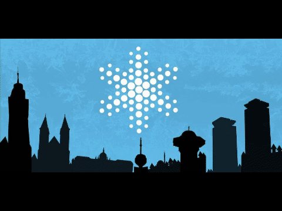

Opis
SSL je sistem koji pojednostavljuje posjetu društveno-kulturnim dešavanjima u Sarajevu. S obzirom na to će kupovina karti putem ovog sistema biti elektronska, doći će do smanjenja radne snage, odnosno, neće biti potreban veliki broj box office-a. Prednost SSL je odabir dešavanja u Sarajevu putem godišnjih doba, pri čemu će svaki događaj biti opisan, kako bi klijenti imali bolju orijentaciju o događajima, te na osnovu toga zaključili šta im najviše odgovara za posjećivanje.
Pored fiksnih događaja, uzeti ćemo u obzir dešavanja u pozorištima, kinima, kao i koncertne manifestacije.
Lokacija svakog događaja će biti označena na Google mapi kako bi korisnici lakše pronašli traženu lokaciju. Također, korisnicima će biti omogućen pregled caffea/ restorana/ bistroa preko Google mape u okolini navedenih događaja.
Pravila poslovanja
Svaki korisnik će morati imati svoj korisnički račun kako bi izvršio kupovinu jedne ili više karata. Klijenti, uz pomoć sistema biraju godišnje doba koje ih zanima ili koje je na pomolu, potom biraju mjesto u dvorani (cijene karata zavise od pozicije sjedišta u odnosu na binu), te ukoliko su sigurni u svoj odabir rezervišu ili kupuju kartu. Ukoliko je klijent odabrao opciju da kupi kartu odmah, i ukoliko je to 2 mjeseca (ili više) prije koncerta obračunava mu se popust 5%. Ukoliko je rezervisao kartu morati će je preuzeti najkasnije 7 dana prije koncerta, u suprotnom se poništava rezervacija. Ukoliko dođe do automatskog poništavanja rezervacija više od 3 puta, korisnički profil se briše, odnosno, navedeni korisnik neće imati pristup sistemu.